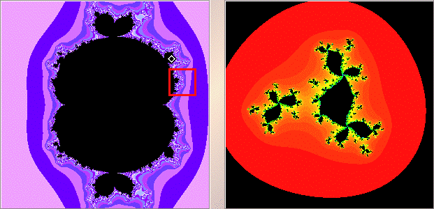
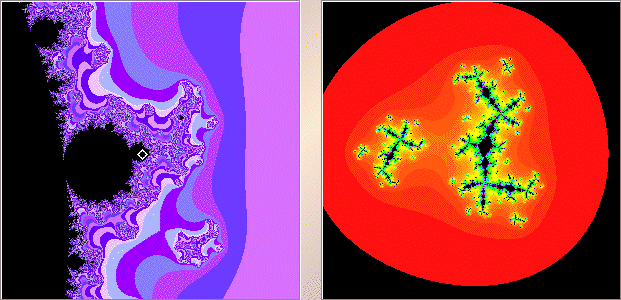

| 2. (d) Here are two examples of Julia sets for c values in M(0) but not in M(-1). The lower left picture is a magnification of the red box in the upper left picture. |
|  |
|  |
| So for points lying inside M(0) and not in M(-1), the Julia set appears to consist of infinitely many
components, each of which is connected. This is not a possibility for Julia sets of |
Return to Exercises.